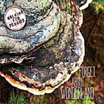

Music Reviews
-

Walking for Pennies Forget About Wonderland
Having created their own combined style of Motown and bluegrass, this dynamic songwriting duo has put together a record that compliments their partnership and their individual talents. It is a very solid debut for a team that is just starting to explore what they can do together.
Joe Marvilli is going down the rabbit hole... -

FIDLAR FIDLAR
The California skate punks fuse riotous hijinks with birdbrained self-loathing for the meme generation to take notice.
Juan Edgardo Rodríguez does an alley-oop... -
Nightlands Oak Island
Oak Island by Nightlands is undoubtedly a relaxed listen – words like “AM radio”, “electronic pop” and “1970’s glitter” keep cropping up - and for good reason, but that doesn’t mean it’s a simple album. Listen carefully, or listen a few times, and you’ll find the layers, textures and lyrics reveal a more serious side, hovering just beneath all those tambourines and trumpets.
Melissa Murphy reviews... -
A$AP Rocky Long.Live.A$AP
Self-professed "pretty motherfucker," 24, WLTM many, many women for fun times in the club, and maybe more. Hobbies: rhymes, fashion, and codeine-based beverages.
Jo£ Riv€r$ r£vi€ws... -
California X California X
California X caught my attention with their amazingly tuneful, yet super sludgy single, Pond Rot. But Does their debut full-length live up to the same standard?
Andrew Ciraulo reviews... -
Villagers {Awayland}
Villagers released experimental first single The Waves as a deliberate attempt to unsettle and redefine expectation, but does that ambition translate onto their sophomore record?
Matt Bevington reviews... -
Everything Everything Arc
Manchester's Everything Everything follow their Mercury-nominated debut with an equally diverse collection. But that doesn't mean it's particularly impressive.
David Coleman reviews... -

Yo La Tengo Fade
Though Yo La Tengo's latest may be one of the more familiar sounding of their post-millenial outings, Fade nevertheless stands out as one of the group's most concise and honest albums yet, detailing just what has made this band so special for almost 30 years.
Peter Quinton reviews Yo La Tengo's latest... -

Mystical Weapons Mystical Weapons
Sean Lennon and Greg Saunier use Mystical Weapons to make indie rock jazz-fusion whoopee. Neither Yoko nor Satomi could be reached for comment.
Sean Caldwell reviews... -

New Order Lost Sirens
A "lost album" that was recorded in 2004, this collection is the first taste of New Order since the band's last album in 2005. However, it's also purported to be the last album with original bassist Peter Hook. For a band with such an expansive career and history, does this album stand up to its previous work, or fall under our expectations?
David Hogg reviews...